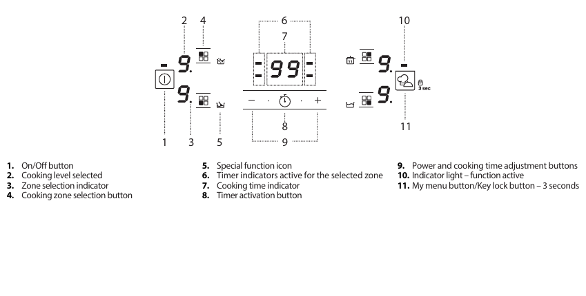
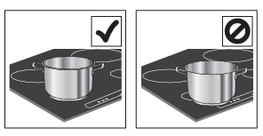

Induction instructions
Safety
- Do not use the cooktop if the surface is cracked.
- Do not place objects on the cooking surfaces.
- Always supervise the cooking process, especially with fats and oils.
- Keep children away from the cooktop.
Turning On and Off
- To turn on: press the power button for about 1 second.
- To turn off: press the same button; all cooking zones will be deactivated.

Daily use
- Select the cooking zone: press the corresponding zone selection button.
- Adjust the power: use the "+" and "-" buttons to set the power level from 1 to 9.
- Booster: some cooking zones have a fast heating function (Booster), shown with the letter "P".
- Deactivate: to deactivate a cooking zone, select it and press "-" until the level is "0".

Special functions
- My Menu: press the “My Menu” button to activate special functions such as Melting, Keep Warm, Slow Cooking, and Boiling.
- Melting: for melting and keeping delicate foods like chocolate without burning.
- Keep Warm: for keeping preparations at the ideal temperature.
- Slow Cooking: for cooking for long periods without burning food.
- Boiling: for bringing water to a boil and keeping it boiling with lower energy consumption.
Control panel lock
- Press the My Menu/Key Lock button for 3 seconds to lock settings and prevent accidental activations. To unlock, repeat the procedure.
Timer
- Select and activate the desired cooking zone, then press the clock icon and set the time using the "+" and "-" buttons.
- The timer will start the countdown and automatically turn off the cooking zone when the time is up.